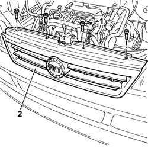
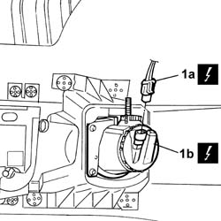
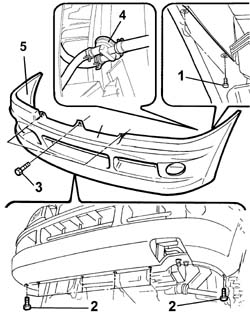

7210E10 R.R. FRONT BUMPER
- Path
- Procedures > 72 PANELS AND FRAME > 7210 REMOVING REFITTING > 7210E EXTERNAL PARTS > 7210E10 R.R. FRONT BUMPER
- Kind
- repair procedure (removal / refitting; the operation number is the code)
- Applies to
- all engines; all production periods
- Interactive page
- https://sloeber94.github.io/elrnDB-fDct/en/#/244001561
Applies to: all engines; all production periods
 Removing
Removing
 Refitting
Refitting- Disconnect the negative battery terminal.
Op. 4450B12 FRONT OR REAR WHEELS (TWO) - R+R
Op. 7055B64 LH OR RH REFLECTOR(ONE) ON REAR BUMPERS - R R
- < R1 > [both sides]
1. Undo the fixing bolts.
2. Remove the front grille.

Applies to: all engines; all production periods
1. Disconnect the electrical connection (1a) for fog lights (1b).
 | Description | Connector |
|---|---|---|
1a | Left fog lamp | F015 |
| Description | Connector |
|---|---|---|
1a | Right fog lamp | F016 |

Applies to: all engines; all production periods
1. Undo the bolts fixing the front bumper to the front wings.
2. Undo the bolts fixing the front bumer to the lower radiator supporting crossmember.
- Lower the lift.
3. Undo the bolts securing the bumper to the upper crossmember.
4. Disconnect the headlamp washer jets water supply pipe.
5. Remove the front bumper from the vehicle.

Applies to: all engines; all production periods
Refitting
Removing- Fit the front bumper on the vehicle.
- Connect the headlamp washer jets water supply pipe.
- Tighten the bolts securing the bumper to the upper crossmember.
- Raise the lift.
- Tighten the bolts fixing the front bumer to the lower radiator supporting crossmember.
- Tighten the bolts fixing the front bumper to the front wings.
- Connect the electrical connection for the fog lights.
| Description | Connector |
|---|---|---|
. | Left fog lamp | F015 |
| Description | Connector |
|---|---|---|
. | Right fog lamp | F016 |
- Fit the front grille and tighten the bolts.
Op. 7055B54 UNDER-ENGINE GUARD - R R
Op. 7055B64 LH OR RH REFLECTOR(ONE) ON REAR BUMPERS - R R
- < R1 > [both sides]
Op. 4450B12 FRONT OR REAR WHEELS (TWO) - R+R
- Connect the negative battery terminal.
Topics linked from this page (3)
- 4450B12 FRONT OR REAR WHEELS (TWO) - R+R
- 7055B54 UNDER-ENGINE GUARD - R R
- 7055B64 LH OR RH REFLECTOR(ONE) ON REAR BUMPERS - R R
Topics that link to this page (11)
- 1004B10 POWER UNIT WITH MANUAL GEARBOX - R + R
- 1004B12 POWER UNIT WITH MANUAL GEARBOX - R+R FOR VERSIONS WITH A/C
- 5040A40 AIR CONDITIONER CONDENSER - R+R
- 5040A50 PIPE FROM COMPRESSOR TO AIR CONDITIONER CONDENSER - R+R
- 5040A52 PIPE FROM CONDENSER TO DEHYDRATING FILTER - R+R
- 5050A10 WINDSCREEN WASHER FLUID RESERVOIR (IN ENGINE BAY) - R+R
- 5050B34 WINDSCREEN WIPER ARM/S COMPLETE WITH BLADE - R+R
- 5540B12 LEFT FOG LAMP - R.& R.
- 7005A24 FRONT SIDE DOOR R R
- 7072E32 HEADLAMP HOLDER CROSSMEMBER - R.R.
- 7210E18 R.R. FRONT WING